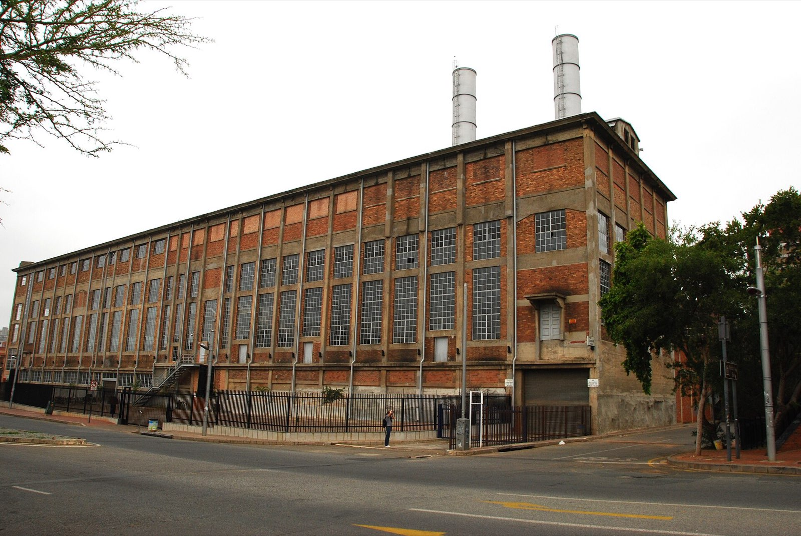

ECO 406 · YEAR 4 · SEMESTER 1
Engineering Economics & Project Management
Money and schedules as engineering quantities: time value, NPV and payback, replacement decisions, and the project management that delivers plant work — the language of every budget meeting you will attend.
10 lessons · 0 in the Core 60 · Primary texts:
- NPTEL: Engineering Economics and Project Management courses (nptel.ac.in)
Time value of money
Interest, compounding, and equivalence; cash-flow diagrams drawn before any formula. Present and future worth conversions. The arithmetic under every 'is it worth it'.
- Draw the cash-flow diagram for a pump replacement with salvage.
- Why does money have time value even without inflation?
Taught from — NPTEL: Engineering Economics
Comparing alternatives
NPV, annual worth, and IRR with their agreement and disagreement cases. Do-nothing as a legitimate alternative. Ranking repairs, replacements, and upgrades on one axis.
- When do NPV and IRR disagree, and which do you trust?
- Why is do-nothing always an alternative?
Taught from — NPTEL: Engineering Economics
Payback and its abuses
Simple and discounted payback computed; where payback misleads and why management loves it anyway. Presenting both payback and NPV without contradiction. The reliability project's financial one-pager.
- What does payback ignore that NPV counts?
- Present both without contradiction: how?
Taught from — NPTEL: Engineering Economics
Depreciation and after-tax thinking
Depreciation methods in outline and their cash-flow effects. Book versus market value in replacement studies. Enough tax logic to read finance's spreadsheet.
- Book versus market value: which enters a replacement study?
- What does depreciation shield, cash-wise?
Taught from — NPTEL: Engineering Economics
Replacement analysis
Defender versus challenger economics; economic life from rising O&M against falling capital recovery. The repair-versus-replace decision formalized. A pump replacement case argued with numbers.
- Define economic life in one sentence.
- Why does rising O&M eventually beat falling capital recovery?
Taught from — NPTEL: Engineering Economics
Life-cycle cost
Acquisition, ownership, and disposal costs integrated; energy and maintenance dominating most industrial LCCs. Sensitivity on the assumptions that matter. Procurement decisions moved from price to cost.
- Which two costs dominate industrial LCC, and what does that do to procurement?
- What sensitivity check makes an LCC credible?
Taught from — NPTEL: Engineering Economics
Project management fundamentals
Scope, WBS, and responsibility assignment; the triple constraint stated without cliché. Stakeholders and the single-page charter. Plant projects sized from kilodinar to shutdown scale.
- What does a WBS decompose, and what must its leaves support?
- Why does scope creep start at the charter?
Taught from — NPTEL: Project Management
Scheduling: CPM and float
Networks, critical paths, and float computed by hand once. Crashing economics. The schedule literacy turnarounds will demand at scale.
- Compute float on a simple network: what does zero float mark?
- What does crashing trade?
Taught from — NPTEL: Project Management
Cost control and earned value
Budgets, commitments, and actuals separated; earned-value indices computed and interpreted. Forecast at completion honestly. Progress reporting that survives audit.
- Interpret CPI 0.85 and SPI 1.1 together.
- Why do commitments, not just actuals, matter in cost control?
Taught from — NPTEL: Project Management
Business-case project
Build the full case for one reliability improvement: baseline losses, options, NPV/payback, risks, and implementation schedule. Presented as a one-pager plus backup. The document that gets funding.
- In your business case, which assumption moved NPV most?
- What implementation risk did you price, and how?
Taught from — Course synthesis